Chapter 1 R이란?
R은 배열 및 행렬로 표현된 데이터에 대한 연산과 효과적인 연산자를 이용해 자료의 분석, 시뮬레이션 및 시각적 표현에 유용한 객체지향적 프로그램이다.
R의 장점은 다음과 같다.
- R은 오픈소스로, 무료이다.
- 패키지를 통해 최신 통계분석 및 그래프 등을 신속히 사용 가능하다.
- R-studio 같은 다양한 연계 오픈소스를 사용할 수 있다.
1.1 R 설치
R프로그램 설치를 위해 R 홈페이지(www.r-project.org)에 접속한다.
화면에서 [download]의 CRAN을 클릭한다.

CRAN Mirror 목록 중 원하는 site를 클릭합니다. 선호도가 없으면 0-Cloud 클릭한다 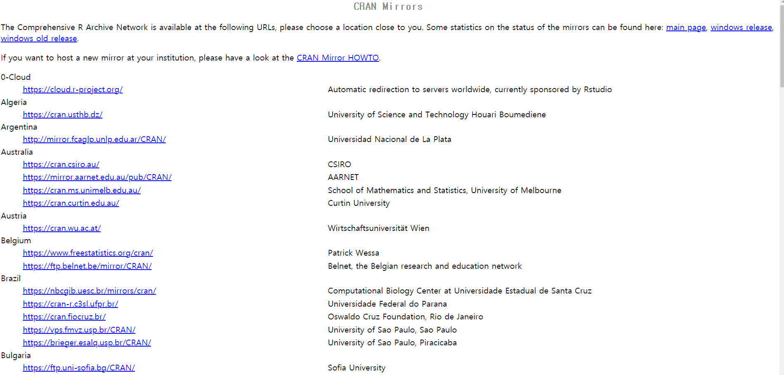
자신의 운영체제에 맞는 R을 클릭한다. 윈도우 버전을 설치할 경우 [Download R for Windows]를 클릭한다. 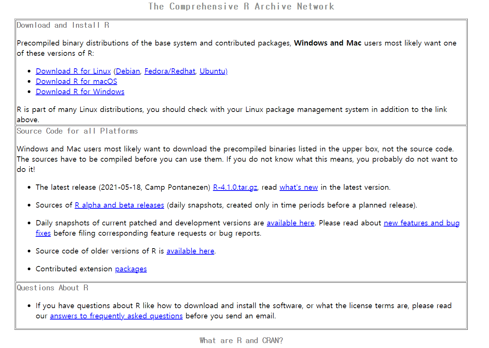
[base]를 클릭합니다. 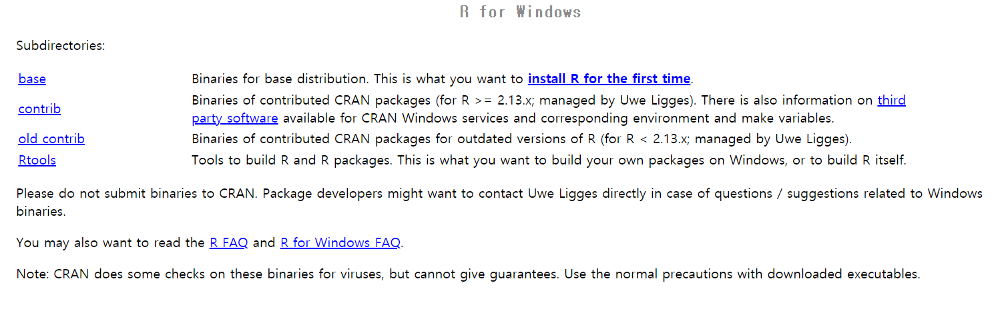
[Download R 4.x.x for Windows]를 클릭하여 설치파일을 다운받는다. 이 파일 명칭은 R이 업데이트되면서 조금씩 변한다. 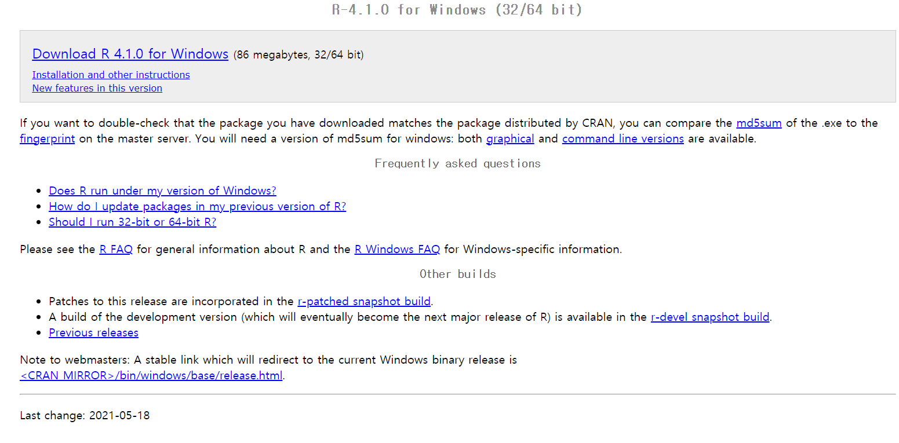
다운받은 파일을 실행시켜 프로그램을 설치한다. (프로그램 설치시 별다른 고민없이 [다음]을 눌러 설치 진행)
1.2 R 프로그램의 구성
R은 기본적으로 R console, R editor, R graphics 화면 3개의 창으로 구성된다. R editor나 R graphics 화면은 R console과 기능이 비슷하므로 여기서는 R console에 대해서 살펴보도록 한다.
1.2.1 파일

R 프로그램과 관련된 파일들을 새로이 작성한 후 저장하고 불러오는 기능과 작업 디렉토리의 변경, 인쇄, R 프로그램의 종료 기능으로 구성되어 있다. 각 부 메뉴의 기능은 다음과 같다.
- R 코드를 소스… : 저장된 R 명령문을 R editor 창에 불러옴과 동시에 자동 실행한다.
- 새 스크립트 : 새로운 R 프로그램을 입력할 R editor 창을 연다.
- 스크립트 열기… : 저장된 R 명령문을 R editor 창에 불러오며 자동 실행은 하지 않는다
- 파일를(을) 표시… : R이나 S 파일 등을 선택하여 새 창에 연다.
- 작업공간 불러오기… : 저장된 작업환경에 대한 객체를 불러온다. 이를 통해 이전 분석환경에서 저장되었던 각종 객체들(데이터, 분석결과, 그래프, 옵션 등)을 그대로 연이어 사용할 수 있다.
- 작업공간 저장하기… : 현재 작업환경의 객체를 확장자 .RData인 텍스트 파일로 저장한다. 한번 저장된 workspace는 다음 R 프로그램 구동 시 자동으로 저장된다.
- 작업기록 불러오기… : R console 화면의 프로그램 이력을 불러온다.
- 작업기록 저장하기… : R 프로그램을 구동 후 작업된 모든 프로그램 이력을 확장자 .History인 텍스트 파일로 저장한다.
- 작업 디렉토리 변경… : R 프로그램의 작업 디렉토리를 변경한다.
- 인쇄하기… : R console 화면의 내용을 인쇄한다.
- 파일에 저장… : R console 화면의 내용을 저장하며 이때 이력과는 달리 출력결과를 포함한 화면에 나타난 모든 내용을 텍스트 파일로 저장한다.
- 종료: R 프로그램을 종료한다.
1.2.2 편집

R console 화면의 편집기능에 대한 부 메뉴들로 구성되어 있다.
- 복사하기 : 선택된 내용을 복사한다.
- 붙여넣기 : 복사된 내용 전체를 붙여 넣는다
- 명령어만 붙여넣기 : 선택된 내용 중 R 프로그램의 명령어만을 붙여 넣는다.
- 복사 후 붙여넣기 : 선택된 내용을 복사하고 현재 커서가 위치한 곳에 붙여 넣는다.
- 모두 선택하기 : 화면 전체를 선택한다.
- 콘솔 지우기 : 현재 R console 화면의 내용을 모두 지운다.
- 데이터 편집기… : 기존에 정의된 데이터를 에디터 창을 열어 나타낸다. 에디터 창을 통해 에디터의 값을 수정할 수 있으며 데이터를 수정한 후 창을 닫으면 수정된 자료가 저장된다.
- GUI 설정… : 화면의 크기와 색, 글꼴 모양 등 R 프로그램의 사용자 환경을 정의한다.

- Single or multiple : R 프로그램의 실행에 따라 열리는 창의 개수에 대한 선택사항이다. MDI를 선호하는 사람이 많으나 여기서는 SDI를 추천한다.
- Pager style : R console 화면 이외에 추가로 열리는 화면에 대한 선택사항이다.
- Console rows, columns, initial left, top : R console 화면의 크기를 지정하는 행수, 열수의 정의와 R 프로그램을 시작할 때 R console 화면의 좌우, 상하 위치를 정의하는 선택사항이다.
- Buffer bytes, lines : R의 계산 효율성과 관련된 선택사항이다.
- Pager rows, columns : R console 화면 이외에 추가로 열리는 화면의 크기를 지정하는 행수, 열수의 선택사항이다.
- Console and Pager Colours : R console 화면과 다른 추가 화면의 색을 지정하는 것으로 화면의 바탕색, 출력 텍스트, 사용자 입력 프로그램, 추가 페이지의 제목줄의 색을 선택한다.
1.2.3 기타
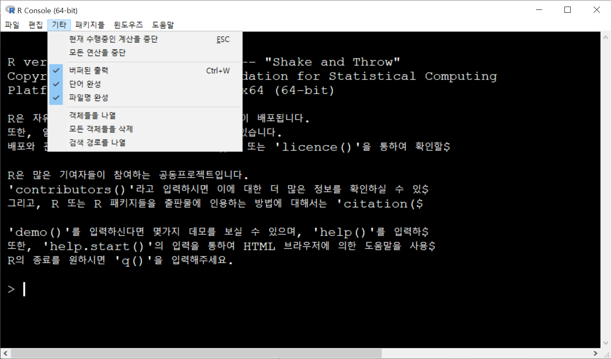
현재 수행중인 계산을 중단하거나 객체의 관리와 관련된 부 메뉴들로 구성된다.
- 현재 수행중인 계산을 중단 : 현재 실행중인 작업을 중단한다.
- 버퍼된 출력 : 이력의 저장과 관련된 선택메뉴이다.
- 객체들을 나열 : 현재 작업환경의 모든 객체를 출력한다.
- 모든 객체들을 삭제 : 현재 작업환경의 모든 객체를 삭제한다.
- 검색 경로를 나열 : 현재 사용할 수 있는 객체들의 자원을 나타낸다.
1.2.4 패키지
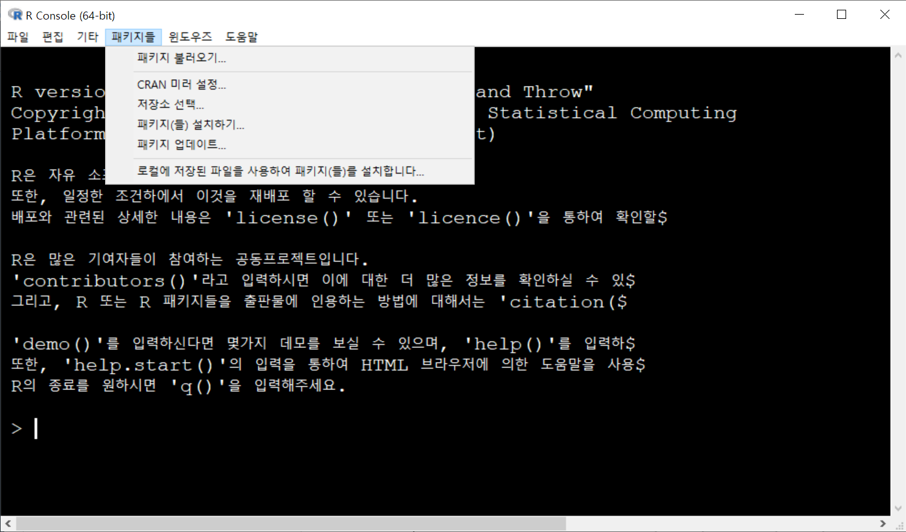
패키지는 주요 목적이 동일한 함수들의 집합을 말하며, 이 메뉴는 패키지의 다운로드와 관련된 메뉴로 구성된다.
- 패키지 불러오기… : R 프로그램의 기본 패키지와 추천 패키지 중 불러올 패키지를 선택한다.
- CRAN 미러 설정… : 다운로드 하지 않은 패키지에 대해 다운로드할 CRAN 미러사이트를 선택한다.
- 저장소 선택… : 분류된 패키지 다운로드 사이트를 선택한다. 선택 사이트는 CRAN, CRAN(Extras), Bioconductor, Omegahat 등이 있다.
- 패키지(를) 설치하기… : 나열되는 패키지 중 인스톨을 원하는 것을 선택한다.
- 패키지 업데이트… : 다운로드된 패키지를 최신화 한다. 디폴트는 graphics 패키지를 최신화 하는 것으로 함수로 표현하면 update.packages(ask=‘graphics’)이다.
- 로컬에 저장된 파일을 사용하여 패키지(을)를 설치합니다… : zip파일 형태의 패키지를 선택하여 인스톨한다.
1.2.5 윈도우즈
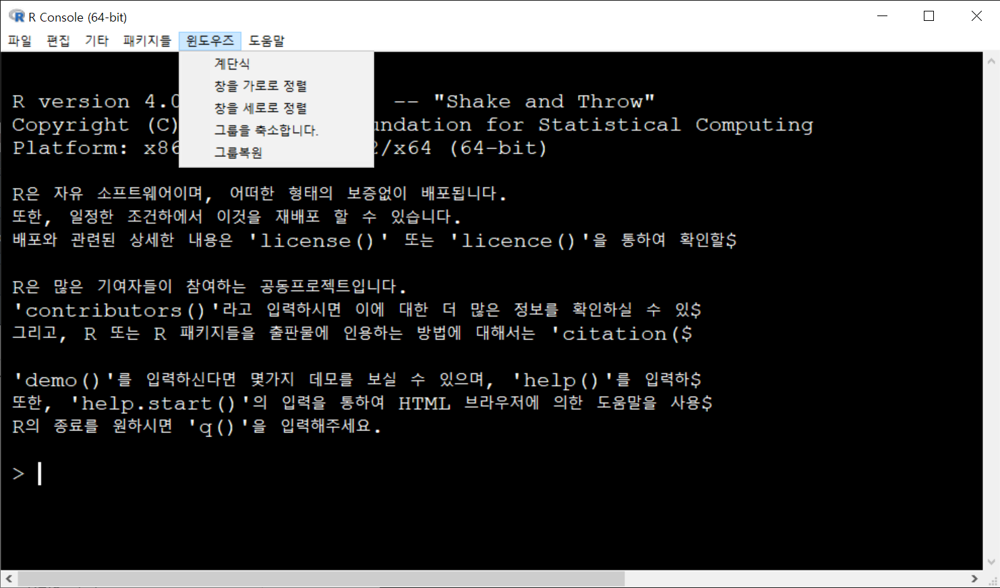
R 프로그램 윈도우의 나열(정렬)과 관련된 메뉴로 구성된다.
1.2.6 도움말
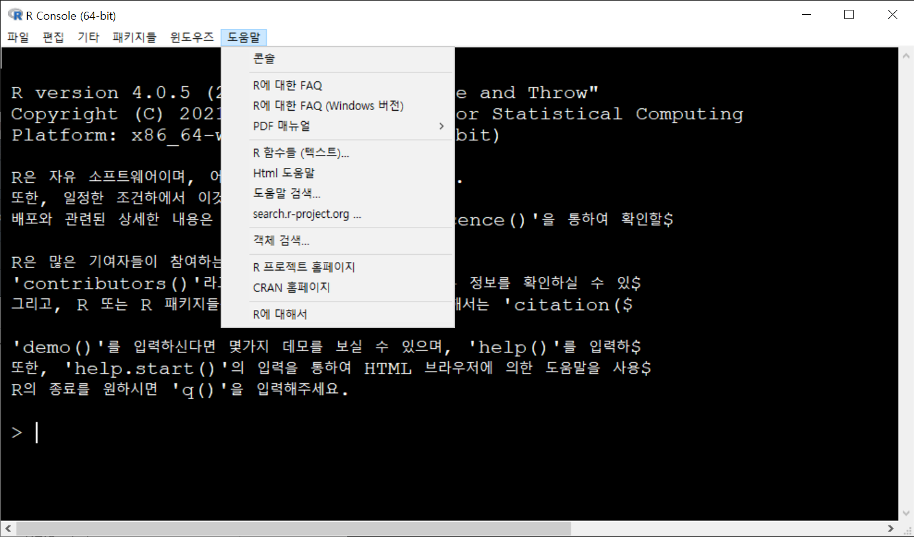
R 프로그램의 도움말 기능과 관련된 메뉴로 구성된다.
콘솔 : R console 화면의 편집기능과 관련된 도움말 창을 연다
R에 대한 FAQ : html 형식의 R FAQ 화면을 연다.
R에 대한 FAQ (Windows 버전) : 윈도우즈 운영환경 하에서의 html 형식의 R FAQ 화면을 연다
PDF 매뉴얼 : pdf 형식의 매뉴얼 파일을 연다.
R 함수들 (텍스트)… : 입력된 함수에 대한 텍스트 형식의 도움말 창을 연다.
Html 도움말 : 주제별로 구분된 html 형식의 도움말을 연다.
도움말 검색… : 주어진 단어를 포함하는 도움말을 R 정보창을 열고 출력한다.
search.r-project.org… : search.r-project.org의 웹사이트를 통해 주어진 단어를 검색한다.
객체 검색… : 주어진 단어를 포함하는 객체를 R console 화면에 출력한다.
R 프로젝트 홈페이지 : 웹페이지 http://www.r-project.org/를 연다.
CRAN 홈페이지 : 웹페이지 http://cran.r-project.org/를 연다.
R에 대해서 : R 프로그램의 정보를 나타내는 창을 연다.
help() 또는 ? : 함수의 기능이나 필요한 인수들에 대한 내용을 볼 수 있다.
help.search() : 원하는 단어를 포함하는 내용을 검색하고자 할 때 사용한다.
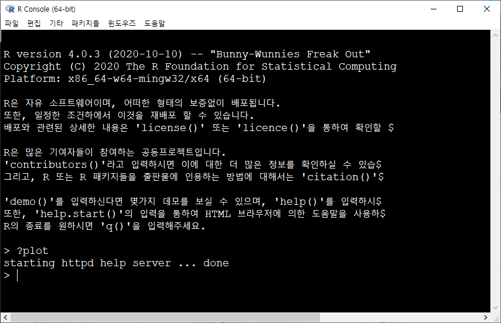

1.3 R 프로그램 특징
- R은 명령어를 1줄씩 처리하고 그 결과를 바로 보여주는 인터프리터 언어이다.
- R 콘솔창에 > 기호는 명령 프롬프트이며, > 뒤에 원하는 명령어를 입력하고 Enter를 치면 명령어가 실행된다.
- R은 대소문자를 구별하기 때문에 명령어를 입력할 때 대소문자를 정확히 구분하여 입력하여야 한다.
- R에서 주석 표시는 #으로 표시한다. 즉, # 다음에 명령문을 입력하면 그 줄은 실행하지 않는다.
- 긴 명령어를 입력하거나 명령어를 재사용할 때는 R 스크립트 창을 이용한다.

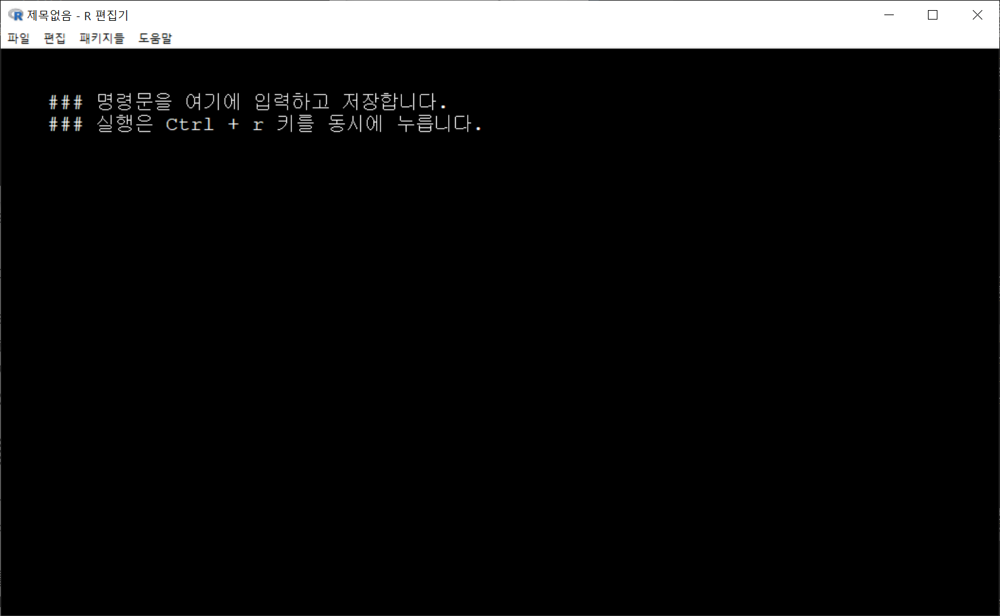
- R 스크립트창에서 [Ctrl + r]키를 누르면 명령문이 콘솔창으로 넘어가서 실행된다.
- 한 행에 두 가지 이상의 명령문을 연이어 작성할 경우에는 ‘;’을 이용하여 각 명령문의 종료를 나타내도록 한다.
- 보통 한 줄에 명령어를 입력하게 되지만 명령어의 길이가 길 경우는 연결 프롬포트로 ‘>’대신 ‘+’가 나타나게 된다. 이는 입력받은 명령어가 불완전할 경우 자동적으로 생성된다.
1.4 RStudio 설치
R 프로그램은 처음 실행하면 R 콘솔창만 보이기 때문에 사용자가 당혹스러움을 느끼게 된다. 또한 모든 것을 명령으로 제어해야 하기 때문에 R 입문자에게 진입장벽이 높게 느껴진다. 이에 R을 좀 더 편안하고 사용자 친화적인 환경으로 만들어주기 위해 여러가지 보조 프로그램이 존재하며, 그 중 R Studio는 다양한 기능을 내장하고 있어 널리 쓰이는 프로그램중 하나이다.
R Studio를 설치하기 위해 www.rstudio.com에 접속한다.
메인화면 아래쪽에서 [DOWNLOAD RSTUDIO FOR WINDOWS]를 클릭하여 설치 프로그램을 다운 받는다. 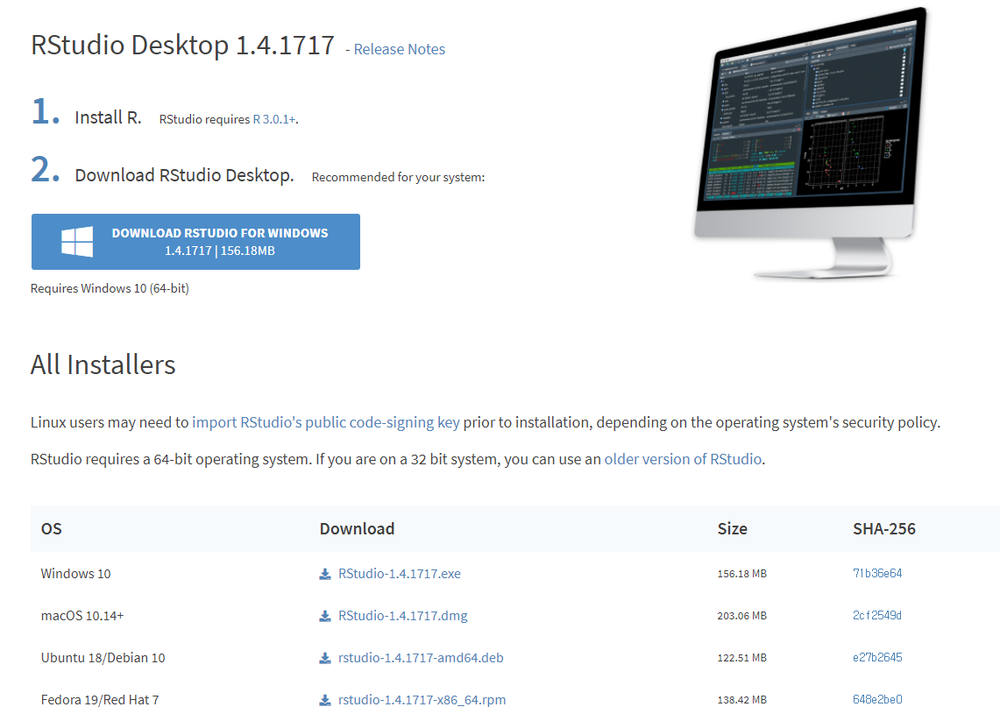
다운받은 파일을 실행시켜 프로그램을 설치한다. 계속해서 [다음]을 눌러 설치를 진행한다.
R스튜디오를 실행한 후 [File] → [New File] → [RScript]를 클릭하면 스크립트 창이 생성되면서, 총 4개의 창이 화면에 나타난다. 스크립트 창, 콘솔 창, 워크스페이스 창, 파일 창 등을 볼 수 있다.

4개의 화면분할은 [Tools]-[Global Options…]-[Pane Layout]에서 위치변경이 가능하다.
- 콘솔 창 : 명령어가 실행되고 그 결과를 보여주는 창입니다. R의 콘솔 창과 거의 동일합니다.
- 스크립트 창 : R 명령어를 입력하는 창입니다. 명령어에 커서를 두거나 명령어들을 선택하고 [Ctrl + Enter]를 누르면 콘솔 창에서 명령어가 실행됩니다. 스크립트 창의 장점은 명령어를 저장하고 불러올 수 있다는 점입니다.
- 워크스페이스 창 : 작업 중에 할당된 변수와 데이터를 보여주는 창입니다.
- 마지막 창은 파일, 그래프, 패키지, 도움말 등을 볼 수 있는 창입니다.
R Studio 스크립트 창에서 명령문 실행은 [Ctrl + Enter]를 누르면 된다.
1.5 R 패키지 이용
R의 가장 큰 장점은 단시일 내에 업데이트 되는 패키지의 이용가능성이다.
패키지는 기본적으로 CRAN에 등록되어 있는 것을 다운 받아 설치하며, 패키지 설치 및 사용 방법은 다음과 같다.
- 패키지 설치하기 install.packages(“패키지명”)
- 패키지 로드하기 library(패키지명)
- 함수 사용하기
패키지 설치 또는 로딩은 명령문 이외에도 R 콘솔창 메뉴에서 수행하는 것이 가능하다. 패키지 인스톨은 R 콘솔창의 풀다운 메뉴중 [패키지들] -> [패키지(들) 설치하기]에서 수행 가능하며, 패키지를 불러올때는 풀다운 메뉴중 [패키지들] -> [패키지 불러오기]를 이용 수행한다. 패키지 설치는 R 프로그램 자체를 삭제할때까지 한번만 수행하면 되나, 패키지 로딩은 R 콘솔창을 다시 실행할때마다 로딩을 시켜줘야 한다.
install.packages("tidyverse") # tidyverse 패키지 설치library(tidyverse) # ggplot2 패키지 로드 (tidyverse 패키지 내에 ggplot2 패키지 존재)## -- Attaching packages --------------------------------------- tidyverse 1.3.1 --## v ggplot2 3.3.5 v purrr 0.3.4
## v tibble 3.1.2 v dplyr 1.0.6
## v tidyr 1.1.3 v stringr 1.4.0
## v readr 1.4.0 v forcats 0.5.1## -- Conflicts ------------------------------------------ tidyverse_conflicts() --
## x dplyr::filter() masks stats::filter()
## x dplyr::lag() masks stats::lag()x <- c("a", "a", "b", "c")
qplot(x) # ggplot2에 있는 함수 qplot 사용하기 (막대그래프 출력)
2개 이상의 패키지를 한번의 명령으로 설치할때는 c() 함수를 이용하여 패키지 이름을 한꺼번에 지정한다.
install.packages(c("패키지명", "패키지명"))CRAN이 아닌 다른 저장소에 저장된 패키지를 설치할때는 그에 맞는 절차를 거쳐야 한다. 그 중 많이 사용되는 Github로 부터 패키지를 다운 받아 설치하고자 한다면 devtools 패키지가 먼저 설치되어야 한다.
install.packages("devtools")
devtools::install_github("패키지 경로명")RStudio에서는 패키지 창에서 Install 버튼을 눌러 패키지를 설치 할 수 있다.
1.6 R 패키지 관리
- 설치된 패키지 보기
installed.packages()RStudio에서는 패키지 창에서 설치된 패키지들을 확인할 수 있다.
- 패키지가 설치된 폴더 보기
.libPaths()- 로드된 패키지 보기
search()## [1] ".GlobalEnv" "package:forcats" "package:stringr"
## [4] "package:dplyr" "package:purrr" "package:readr"
## [7] "package:tidyr" "package:tibble" "package:ggplot2"
## [10] "package:tidyverse" "package:stats" "package:graphics"
## [13] "package:grDevices" "package:utils" "package:datasets"
## [16] "package:methods" "Autoloads" "package:base"- 패키지 언로드 하기 (메모리에서 내리기)
detach(package:ggplot2, unload = TRUE)- 설치된 패키지 제거하기
remove.packages("rpart")- 패키지 업데이트하기
# 모든 패키지 업데이트
update.packages()
# 특정 패키지 업데이트
update.packages(oldPkgs = c("패키지명", "패키지명"))1.7 산술 연산자
- +(더하기), -(빼기), *(곱하기), /(나누기), ^(자승), %%(나머지), %/%(몫)
1+2## [1] 31+2*3## [1] 7연산의 우선순위인 ( ), { } , [ ] 중 대괄호[ ]는 R에 특수한 역할이 정의되어 있으므로 사용불가. 중괄호의 경우 오류는 없으나 정의된 다른 역할이 있으므로 사용을 자제해야 한다. ( )를 통하여 제어를 한다.
(1+2)*3## [1] 9{1+2}*3## [1] 9보통 한 줄에 명령어를 입력하게 되지만 길이가 긴 경우에는 연결 프롬포트로 ‘>’대신 ‘+’가 나타난다. 따라서 ‘+’이후에 프로그램을 입력하면 된다.
3+
4## [1] 7기본적으로 R에서 명령문은 한 줄에 한 명령문이다. 한 명령문의 마침은 ‘;’으로 구분한다. 따라서 한 행에 두 가지 이상의 명령문을 실행하려면 ‘;’을 이용한다.
1+2; 3+4## [1] 3## [1] 71.8 논리 연산자와 비교 연산자
논리값(logical)은 참(TRUE)이나 거짓(FALSE)값을 나타내며, 이러한 값은 조건식에 주로 이용한다. 논리값의 연산에는 &나 |를 사용하며, 각각 논리값의 교집합(and)과 합집합(or)을 의미한다.
1 == 1 ## [1] TRUE1과 1은 같은 값이므로 TRUE값을 반환한다. 여기서 ==는 수학의 등호와 같은 역할을 한다.
1 != 1 ## [1] FALSER에서 not의 의미는 !를 이용한다. 따라서 “5는 5가 아니다”의 의미를 뜻하기 때문에 FALSE 값을 반환한다.
비교연산자에는 <, >, <=, =>, ==, !=이 쓰이며, !은 부정 연산자를 의미한다.
1 > 1## [1] FALSE1 >= 1## [1] TRUE1 < 2 ## [1] TRUE2 <= 1## [1] FALSE논리형인 TRUE와 FALSE는 보기에는 문자처럼 보이지만 R 내부에서는 TRUE=1, FALSE=0으로 인식한다. 따라서 사칙연산에 사용도 가능하다. 또한 TRUE는 줄여서 T로, FALSE는 줄여서 F로 써도 동일하게 인식한다.
TRUE + 1## [1] 2FALSE - 1## [1] -1T + FALSE## [1] 1T - F## [1] 1논리 연산자의 작동 원리는 다음과 같다.
!TRUE # Not x ## [1] FALSETRUE | FALSE # x OR y ## [1] TRUETRUE & FALSE # x AND y ## [1] FALSEisTRUE(TRUE) # if x is TRUE## [1] TRUE1.9 기초 산술 함수
1.9.1 통계 함수
sum(c(2, 4, 6)) # 합계## [1] 12mean(c(2, 4, 6)) # 평균## [1] 4var(c(2, 4, 6)) # 분산## [1] 4sd(c(2, 4, 6)) # 표준편차## [1] 2median(c(2, 4, 6)) # 중앙값## [1] 4max(c(2, 4, 6)) # 최대값## [1] 6min(c(2, 4, 6)) # 최소값## [1] 2IQR(c(2, 4, 6)) # 사분위범위## [1] 2quantile(c(2, 4, 6, 8, 10), probs=c(0.25,0.75)) # 백분위 수## 25% 75%
## 4 8range(c(2, 4, 6, 8, 10)) # 최대값과 최소값## [1] 2 10# 여섯수치 요약(최소값, 1사분위수, 중앙값, 평균, 3사분위수, 최대값)
summary(c(2, 4, 6, 8, 10)) ## Min. 1st Qu. Median Mean 3rd Qu. Max.
## 2 4 6 6 8 10# 다섯수치 요약(최소값, 1사분위수, 중앙값, 3사분위수, 최대값)
fivenum(c(2, 4, 6, 8, 10)) ## [1] 2 4 6 8 101.9.2 로그 및 지수 함수 (Logarithms and Exponentials)
- 로그 함수
log(10) # 자연로그 logarithms base e of x, e=2.7182818284⋯## [1] 2.302585log10(10) # 상용로그 logaritms base 10 of x## [1] 1log2(10) # 이진로그 logarithms base 2 of x## [1] 3.321928log(10, base=exp(1)) # 자연로그 logarithms base e of x ## [1] 2.302585- 지수 함수
exp(1) # 지수 e=2.7182818284⋯## [1] 2.718282- 지수 \(e^{10}\)
exp(10) ## [1] 22026.471.9.3 삼각 함수
cos(1) # Cosine of x## [1] 0.5403023sin(1) # Sine of x## [1] 0.841471tan(1) # Tangent of x## [1] 1.557408acos(1) # Arc-cosine of x## [1] 0asin(1) # Arc-sine of x## [1] 1.570796atan(1) # Arc-tangent of x## [1] 0.78539821.9.4 기타 수학 함수
pi # 파이 값## [1] 3.141593abs(-3) # 절대 값 absolute value of x## [1] 3sqrt(3) # 제곱근 square root of x## [1] 1.732051sign(-3) # 부호함수(양수=1, 음수=-1)## [1] -1round(2.45, 1) # 반올림## [1] 2.5ceiling(2.45) # 정수로 올림## [1] 3floor(2.45) # 정수로 내림## [1] 2trunc(2.45) # 0과 x사이의 가장 큰 정수 반환## [1] 2signif(2.45, 2) # 전체 자릿수에 맞게 반올림## [1] 2.4- \(x\)의 계승 출력(\(x!\))
factorial(5)## [1] 120- \(x\)에서 \(y\)를 고르는 조합(combination)의 수(\(_xC_y\))
choose(5,3)## [1] 10- 감마함수와 베타함수
gamma(4) # (x-1)!## [1] 6beta(3,4) # (x-1)! * (y-1)! / (x+y-1)!## [1] 0.01666667R은 기본적으로 7자리까지 숫자를 표현한다. 표현되는 자리수를 변경하고자 하면 options() 함수를 사용한다. options(digits = 16)와 같이 지정하면 16자리로 설정된다.

1.10 객체의 명명과 할당
1.10.1 객체(변수) 만들기
상수나 변수, 객체의 이름을 작성할 때는 대소문자를 반드시 가려야 한다. 객체의 이름은 문자 a~z, A~Z와 숫자 0~9 그리고 ‘.’과 ‘’의 조합으로 구성한다. 첫 문자로 숫자와 ‘’은 사용할 수 없으며, if, for, c, pi와 같은 R프로그램의 내장 함수와 같은 이름은 사용 시 조심해야 한다.
할당은 변수나 객체에 값을 정의하는 것을 말한다. 할당 연산자로 ‘=,’ ‘<-,’ ‘<<-’ 세 가지 형태로 사용 가능하며, 되도록 ‘<-’를 사용하기를 권장한다. 만약, 함수 내에서 ‘=’를 사용하여 할당 한 경우 할당된 값은 함수가 수행된 후에 저장되지 않으나, ‘<-,’ ‘<<-’를 통해 할당된 객체 값은 사라지지 않는다.
x <- 3; x## [1] 3x <- 3 의 의미는 x라는 저장소에 3이라는 값을 저장하라는 의미이다. 할당에는 여러 가지 기호가 쓰이지만 여기서는 ‘ <- ’ 왼쪽 화살표를 쓰도록 한다. 그래서 일관되게 왼쪽 화살표 왼쪽엔 값이 저장될 객체(object) 이름을 쓰고 왼쪽 화살표 오른쪽에는 실질적으로 저장될 값을 지정한다.
R은 대화형 프로그램이기 때문에 기본적으로 명령어를 입력하면 바로 결과를 출력 해준다. 즉, input과 output이 대화하듯이 이루어진다. 하지만 할당을 하는 경우에는 input만 있고 output은 이루어지지 않는다. 따라서 할당을 하는 경우에는 output에 해당하는 명령어를 지정해야 하는데, 객체의 값을 보고 싶을땐 간단하게 객체의 이름을 입력하면 된다. 여기서는 x <- 3을 했기 때문에 x라는 객체 이름을 써주면 x가 가지고 있는 값을 출력해준다.
R은 대소문자를 가리기 때문에 항상 조심해야한다. 객체 x는 생성하였으나, X는 생성하지 않았기 때문에 값을 반환하지 않고 에러 문구를 출력한다.
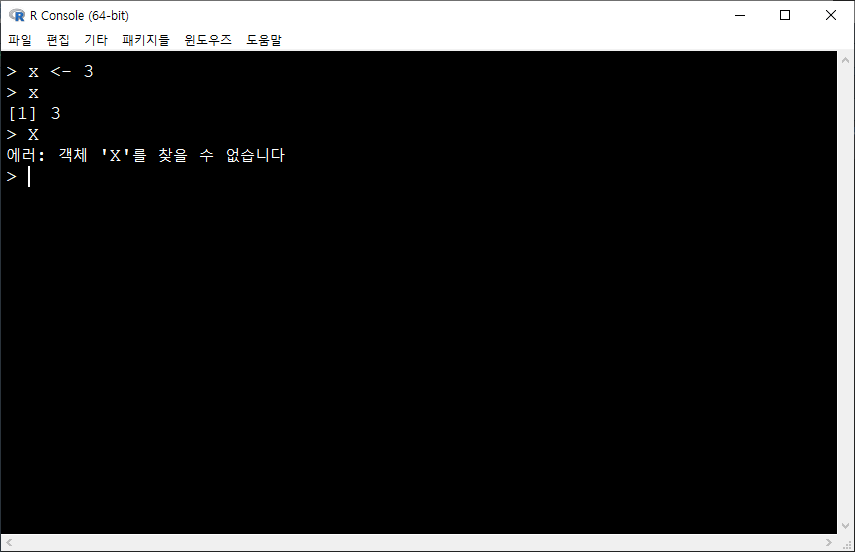
1.10.2 객체 목록 보기
생성된 객체의 목록을 보기위해서 ls() 함수를 이용한다.
ls()## [1] "x"1.10.3 객체(변수) 지우기
생성된 객체를 삭제할땐 rm() 함수를 이용한다.
y <- 5
ls()## [1] "x" "y"# 객체 x삭제
rm(x)
# 남아 있는 객체 리스트 출력
ls()## [1] "y"y## [1] 5
1.11 데이터 유형
1.11.1 데이터의 기본 유형
데이터 값의 최소 단위를 기준으로 R에서 구분하고 있는 데이터의 기본 유형은 다음과 같다.
- 수치형(numeric) : 숫자로 이루어졌으며 정수형(integer)과 실수형(double)으로 구분한다.
- 논리형(logical) : 참(TRUE)이나 거짓(FALSE)의 논리값을 나타낸다.
- 문자형(character) : 문자나 문자열을 나타낸다.
- 복소수형(complex) : 실수와 허수로 구성된 복소수를 나타낸다.
데이터 값의 유형을 확인할때는 mode() 함수를 이용한다.
- mode() : 데이터의 유형을 나타내 주는 함수이다.
# 수치형
height <- 180
mode(height)## [1] "numeric"# 문자형 - 문자값은 따옴표(" 또는 ')로 둘러쌉니다.
name <- "Allen"
mode(name)## [1] "character"# 논리형 - TRUE, FALSE
is_boy <- TRUE
mode(is_boy)## [1] "logical"1.11.2 특수 데이터
R에서 정의되는 특수한 형태의 데이터는 다음과 같다.
- NULL : 비어있는 값으로 데이터 유형도 없으며 자료의 길이도 0임.
- NA : 결측값(missing value).
- NAN : 수학적으로 정의가 불가능한 수 (예: sqrt(-3)).
- Inf, -Inf : 양의 무한대와 음의 무한대.
특수한 형태의 데이터들과의 연산 결과는 보통 특수한 형태의 데이터가 되고 데이터의 형식은 연산에 사용된 다른 값들의 유형과 동일하게 된다.
sqrt(-3)## Warning in sqrt(-3): NaN이 생성되었습니다## [1] NaN1 / 0## [1] InfNULL + 3## numeric(0)NA + 3## [1] NA1.11.3 데이터 유형 함수
데이터의 유형을 검증하기 위한 함수는 is.~ 형태를 이용한다. 만약 데이터 x의 유형이 수치형인지를 확인하려면 is.numeric()을 이용하며, 이때 결과는 TRUE 또는 FALSE로 반환한다.
is.numeric(x) : 수치형 여부
is.double(x) : 실수형 여부
is.integer(x) : 정수형 여부
is.logical(x) : 논리형 여부
is.complex(x) : 복소수형 여부
is.character(x) : 문자형 여부
is.na(x) : NA 여부
is.null(x) : NULL 여부
is.nan(x) : NaN 여부
is.infinite(x) : 무한 수치 여부
is.finite(x) : 유한 수치 여부
height## [1] 180is.numeric(height)## [1] TRUEname## [1] "Allen"is.numeric(name)## [1] FALSEis.character(name)## [1] TRUE1.11.4 데이터 유형 변경
서로 다른 유형의 데이터에 대한 연산결과는 R 프로그램에 의해 자동으로 하나의 유형으로 정의된다. 이러한 형상을 데이터 유형의 강제변환이라고 부르며 값의 유형별 우선순위는 다음과 같다.
문자형 > 복소수형 > 수치형 > 논리형
R에서 유형 변환은 ‘as.~’ 함수를 이용하며, 가능한 함수는 다음과 같다.
- as.numeric(x) : 수치형으로 변환
- as.logical(x) : 논리형으로 변환
- as.double(x) : 실수형으로 변환
- as.complex(x) : 복소수형으로 변환
- as.integer(x) : 정수형으로 변환
- as.character(x) : 문자형으로 변환
x <- "3"
x## [1] "3"is.numeric(x)## [1] FALSEis.character(x)## [1] TRUEx <- as.numeric(x)
is.numeric(x)## [1] TRUEx## [1] 31.12 자료의 입력
1.12.1 read.table()
테이블 형식(텍스트 파일 형식, txt 파일)의 외부 파일로부터 데이터를 읽어 데이터 프레임을 생성한다. 데이터 구분자는 공백을 기본으로 한다.
read.table(file, header = FALSE, sep = "", as.is = FALSE, na.strings = "NA") file: 불러오고자 하는 파일의 경로명을 입력
header: 불러오는 자료의 첫 줄에 변수명이 있는 경우 TRUE로 지정
sep: " " 안에 값을 구분하는 구분자를 설정. 아무것도 없으면 공백을 의미
file.choose() : 파일을 불러올 때 file.choose()를 이용하면 윈도우 탐색기창을 통해 쉽게 파일을 선택할 수 있다.
read.table(file.choose(), header=T, sep = "", as.is = T, na.strings = ".")1.12.2 read.csv()
확장자가 csv (comma seperated value)인 파일을 불러들인다. read.table()과 기능이 같으며 데이터 구분자는 ‘,’이다. 즉, read.table()에서 sep=“,”로 지정한 것과 같은 기능을 한다.
read.csv(file.choose(), header=T)1.12.3 read.delim()
read.table()과 기능이 같으며 데이터 구분자는 ‘Tab(\(\t\))’이다.
read.csv(file.choose(), header=T)1.12.4 read_excel()
EXCEL 파일로 저장된 파일을 R 내부로 불러오기 위해 read_excel(), read_xls(), read_xlsx() 함수 등을 사용할 수 있다.
이러한 함수를 이용하기 위해서는 readxl 패키지가 필요하기 때문에 패키지를 인스톨해야 한다.
install.packages("readxl")
library(readxl)read_excel() 함수의 사용법은 다음과 같다.
read_excel(path, sheet = NULL, range = NULL, col_names = TRUE,
col_types = NULL, na = "", trim_ws = TRUE, skip = 0,
n_max = Inf, guess_max = min(1000, n_max),
progress = readxl_progress(), .name_repair = "unique")- path: 엑셀파일 경로명
- sheet: 불러들이는 엑셀파일의 sheet 이름
- col_names = TRUE: 불러들이는 자료의 첫 줄에 변수 이름이 지정된 것을 default로 설정됨
1.13 자료의 출력
R의 여러 형식의 자료 객체를 외부의 텍스트 파일로 출력하는 방법은 write.table() 함수 또는 package ‘writexl’ 내의 write_xlsx() 함수를 이용하는 것이다.
1.13.1 write.table()
write.table(x, file = "", append = FALSE, quote = TRUE, sep = " ",
eol = "\n", na = "NA", dec = ".", row.names = TRUE,
col.names = TRUE, qmethod = c("escape", "double"))- write.table(데이터셋명, file = “d:\(\work\data.txt\),” sep = “\(\t\),” row.names = FALSE)
- 데이터셋을 d:디렉토리에 data.txt라는 파일 이름으로 저장한다. 이때 각 데이터는 Tab 분리로 저장되며, 행 이름은 저장되지 않는다.
- write.table(데이터셋명, file = “clipboard,” sep = “\(\t\),” row.names = FALSE)
- 데이터셋을 Tab 분리로 행 이름 없이 클립보드에 저장한다. Tab 분리로 클립보드에 저장할 시 엑셀로 간단히 복사할 수 있다.
1.13.2 write_xlsx()
install.packages("writexl")
library(writexl)write_xlsx(
x,
path = tempfile(fileext = ".xlsx"),
col_names = TRUE,
format_headers = TRUE,
use_zip64 = FALSE
)- 파일이 저장될 디렉토리를 지정하기 귀찮으면, file.choose()를 사용한다.
- write_xlsx(데이터셋명, file.choose())
1.14 R Manual
R 명령어와 관련된 자세한 사항은 https://elflini.github.io/study/rmanual/ 또는 https://sites.google.com/view/statedu/statistical-program/r-program을 참조하길 바란다.